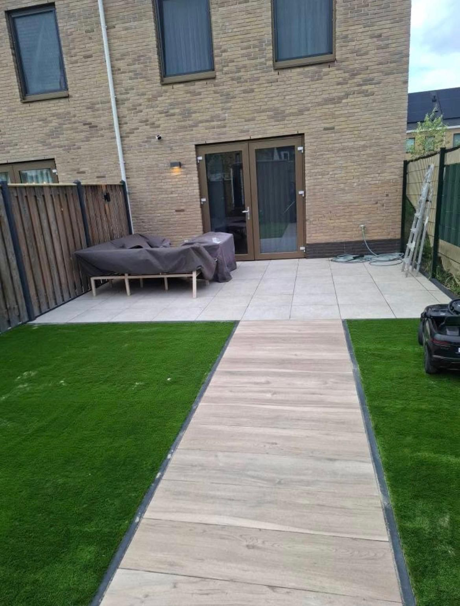

Yapay çim döşeme
Yıl boyunca iyi görünen düzgün bir çim. Sonucu zemin belirler; bu yüzden önce onu iyi yaparız.
- Sağlam zemin
- Düzgün kenarlar ve birleşimler
- Malzeme görüşmeyle
- Net teklif
Sizin için neler yapıyoruz
Dordrecht, Zwijndrecht, Hendrik-Ido-Ambacht, Drechtsteden ve Rotterdam çevresinde çalışıyoruz. Net fiyat durumunuza bağlıdır; size açık bir teklif sunarız.
Zemin ve drenaj
Eski çim ve toprak kaldırılır; düz, suyu geçiren bir taban için kum ve sıkıştırma yapılır.
Döşeme ve bitiş
Yapay çim düzgün serilir, birleşimler yapıştırılır ve kenarlar özenle bitirilir.
Teras ve yolla birleştirme
Projelerimizde olduğu gibi, zemin döşemenin veya ahşap görünümlü yolun yanında yapay çim.
Eski çimin kaldırılması
Eski çimi kaldırır ve taşırız.
Sık sorulan sorular
Yapay çimin bakıma ihtiyacı var mı?
Çimden çok daha az, ancak ara sıra temizlemek ve tırmıklamak akıllıcadır.
Bahçeme hangi yapay çim uyar?
Bu kullanıma, renge ve bütçeye bağlıdır. Danışmanlık veririz ve seçilen malzemeyi teklife ekleriz.
Eski çimi de kaldırabilir misiniz?
Evet, taşıma dahil.
Bağlayıcı olmayan bir teklif mi?
Durumunuzu anlatın veya fotoğraf gönderin. Dordrecht ve çevresinde keşif için memnuniyetle uğrarız.